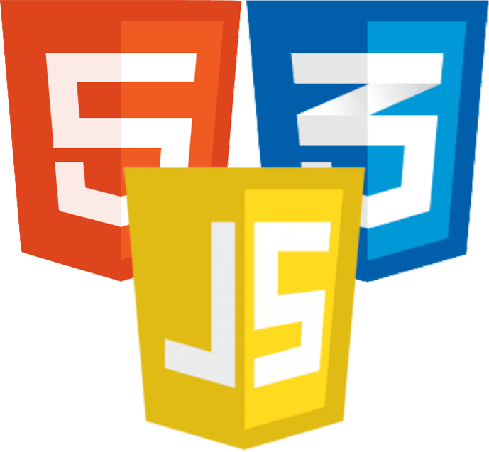
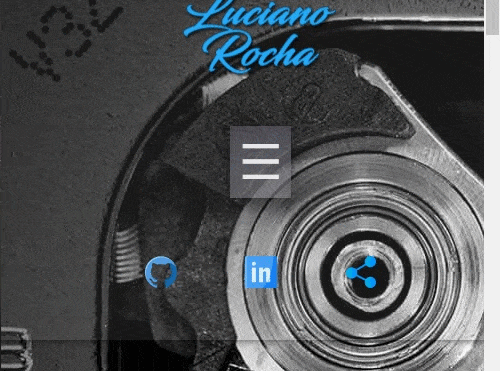
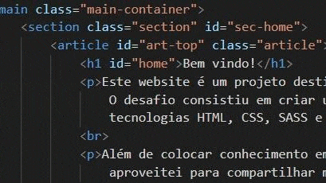
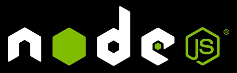
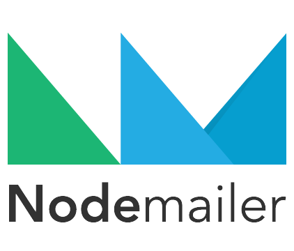
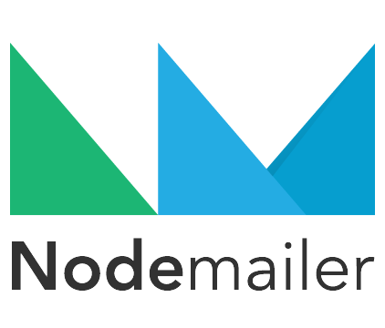

Estrutura
≪ Idealização ≫
Após alguns meses realizando um curso de JS na
Udemy, decidi
praticar desenvolvimento web de forma progressiva. Portanto,
idealizei meu primeiro projeto como uma página estática, responsiva
e simples. Eu não queria criar um website simulando um negócio
fictício, então pensei num projeto que trouxesse visibilidade e
espaço para expor meu aprendizado adquirido na construção do próprio
projeto.

Eis a concepção: Após definir o layout, criei a estrutura utilizando
HTML5 semântico e SASS para estilizar com CSS3. Por fim implementei
JavaScript no cliente e no servidor para o funcionamento da página
corresponder a minha idealização.
A característica estática ficou por conta do conteúdo estar disposto
em uma única página, sem área para login ou personalizações, além de
um simples formulário para contato. E também pelo Express servir os
arquivos estáticos contidos na pasta raiz do aplicativo, como html,
css, js e imagens.
A característica responsiva ficou a cargo do CSS gerado pelo SASS
(maior código do projeto), com mixins, media queries, includes,
ajustes de propriedades e display dos elementos.
≪ Tecnologias ≫
Front-end – HTML, CSS, SASS e JS.
Back-end – Node.js, Express, Dotenv, GoogleAPIs, Nodemailer,
Nodemon, Webpack e Pm2.
Ferramentas – VS Code, Github, Gmail, muito Google e um pouco de
Photoshop.
Hospedagem – Heroku.
Primeiramente, defini o background do body da página como uma imagem
fixa que utiliza altura máxima. Esta imagem serviu como fundo para o
navbar, pois decidi cria-lo com efeito de transparência. Escolhida a
classe para o header, utilizei o display flex, algumas propriedades
de alinhamento e box-shadow para estilizar o navbar. Defini 3 divs
dentro do header e atribuí a classe item para todos, a fim facilitar
a estilização, já que cada div é um item dentro de um flexbox. As
divs estão justificadas no navbar como space-between, sendo a
primeira na esquerda, a segunda no centro e a terceira na direita.
Importante:
As imagens utilizadas na página foram exportadas pelo Photoshop
com qualidade reduzida (até um limite aceitável) no formato JPG.
Exceto imagens com transparência no formato PNG. Ainda sim as
imagens foram comprimidas pelo
tinypng.com.
Quando possível, também é bom converter logos e icons para o
formato SVG. Esses cuidados reduzem o tamanho final da pasta de
imagens ;)
Na primeira div inseri a imagem da minha logo, que criei no
Photoshop por causa deste projeto, depois a converti para o formato
SVG.

A segunda div comportou o menu, que conta com um input checkbox e
seu label, além de uma div interna (abaixo do label) para disposição
da lista desornada do menu propriamente dito. O checkbox serviu para
tornar o menu retrátil. Funciona da seguinte forma: Antes de tudo,
defini list-style-type como none para listas no escopo global da
página. O label é um código HTML Unicode utf-8 (um símbolo de
trigrama) com display none, o input checkbox também tem a
propriedade display none. O label muda o display para inline através
de mixins/media queries somente em larguras de tela menores. Ao
mesmo tempo, a div abaixo, que comporta a lista do menu, fica com a
propriedade max-height zerada durante a view em telas menores. O
efeito causado é, quando a tela diminui, o menu some e o label
aparece disponível para ser acionado. Ao checar o input (através do
label), o menu volta a aparecer devido o max-height mudar para 100%.
Isso gera o efeito retrátil. Além das propriedades do input checkbox
e do label, mencionei propriedades da div que contém o menu. Ainda
temos a <ul> e as <li>, que formam o menu dentro desta
div. A ul possui display flex, que muda para block em telas menores,
entre outras propriedades. As li e suas ancoras sofrem mudanças de
padding, margin e height para se ajustarem.
A terceira div do header/navbar serviu para dispor 3 elementos
ancora, com um icon dentro de cada um. Eles apontam para o meu
github, linkedin, e a última tag serve como botão para compartilhar.
No cliente JS, criei uma função que espera pelo evento click desta
ancora, para então copiar a url do site, emitir um alerta
informativo e por fim direcionar o usuário para o footer da página
(onde existem botões de compartilhamento com várias opções). Dessa
forma o usuário pode apenas colar a url já copiada em algum lugar ou
escolher uma opção mais moderna de compartilhamento disponível.
Vale mencionar que utilizei um font-size mediano para o menu e para
o site em geral, visando acessibilidade. Também importei a fonte do
Google Fonts
via CDN ao invés de baixar o arquivo ttf.
≪ Sections ≫

O conteúdo da página vem logo abaixo do header, dentro da tag main,
que por sua vez contém as sections e articles. As sections alocam um
ou mais articles com títulos e parágrafos. Além dos ids individuais,
escolhi uma classe comum para todas as sections, a fim de padronizar
posições e espaçamentos. Editei imagens e gifs para inserir dentro
dos articles junto ao texto, usando as propriedades float, width e
margin. Ainda sim, com atenção para incluir e ajustar os devidos
mixins criados com SASS, a fim de reposicionar as imagens de acordo
com o tamanho da tela.
Adicionei botões next e previous aos títulos e subtítulos dos
artigos, que na verdade são símbolos Unicode/HTML, dentro de tags
âncora, dentro de um span estilizado. A ideia aqui foi facilitar a
navegação para mobile. Outro detalhe foi a implementação de botões
back to top localizados em alguns pontos da página. Eles disparam
uma tooltip feita apenas com HTML e CSS. Para construir, criei uma
div com classe para estilizar, dentro dela há uma tag âncora que
contém a imagem do centro do botão, e abaixo da âncora vem um span
com o texto da tooltip. Utilizei uma classe neste span para
estilizar as cores e animação, além de manter o atributo opacity
zerado. Ao passar o mouse sobre a div do botão, a opacity do span
muda para 1, resultando no efeito da tooltip. Confira aqui em baixo!
Criei o formulário de contato dentro de uma section, ele possui
classe diferenciada, h1, inputs e textarea com respectivos ids.
Optei por utilizar validação client-side do próprio HTML5 no
formulário, por ser mais simples e prático. Utilizei display block
nesta section, além de propriedades para posicionar e dimensionar
cada elemento. Também escolhi uma font-family do meu agrado para os
campos.
O form está disposto no fim da tag main, logo acima do footer da
página. Sua funcionalidade, obviamente, é permitir que usuário envie
um e-mail diretamente para mim. Para isso ser possível precisei do
JS no cliente e no server, utilizando AJAX.

No lado do cliente, criei variáveis para retornar o seletor do form
e obter elementos de cada id dos inputs e textarea. Cancelei o
evento submit do form para criar uma nova variável formData contendo
os valores dos elementos (preenchidos nos campos do form). Logo
após, instanciei um objeto para solicitações HTTP e transferência de
dados entre cliente e servidor, o XMLHttpRequest, que faz a mágica
do AJAX acontecer, permitindo a recuperação de dados sem ter que
atualizar uma página inteira. Após abrir uma nova requisição com
método POST e definir a URL para envio da solicitação, setei o
cabeçalho da requisição e tipo de texto JSON para ser enviado ao
servidor. O formData que contém os dados do form são enviados para o
servidor de forma assíncrona, já convertidos de javascript para
string JSON.
No lado do servidor, instanciei o express, nodemailer, googleapis e
o dotenv. Escolhida a porta a ser usada pelo server, utilizei a
função middleware do express para entregar arquivos estáticos,
definindo a pasta src como static, além de outro método do express
para reconhecer todos os objetos de requests como objetos JSON.
Também defini o método GET na url raíz “/” para servir o arquivo
index.html dentro da pasta src, nossa página principal (e única).
Detalhe: A configuração do Express mencionada acima, levou em conta a
estrutura de pastas do projeto em ambiente de desenvolvimento. Ao
criar a build do projeto para produção, essa estrutura muda.
Trarei mais detalhes no tópico Build & Hospedagem.
 Aqui entra o Nodemailer, um módulo para envio de e-mails
automatizados através de aplicações em ambiente Node.js. Criei o
método post no Express, para instanciar o transporter do Nodemailer
e inseri as informações do serviço de e-mail utilizado, no caso o
Gmail, que faz o papel de enviar a mensagem do formulário. Vale
ressaltar que não informei as credenciais da minha conta diretamente
no código da aplicação servidor. Utilizei o Dotenv ao criar um
arquivo ".env" na pasta do projeto, que me permitiu registrar estes
dados sensíveis e assim poder acessa-los no código JS como
process.env.EMAIL_USER, por exemplo. Para utilizar o serviço do
Gmail nesta aplicação, tive que configurar a conta, criar um projeto
no Google Cloud Platform, configurar a API do Gmail e habilitar a
autenticação OAuth 2.0, para utilizar credenciais seguras. O OAuth
funciona com alguma conta de e-mail vinculada a cliente id, cliente
secret, token de acesso e refresh token, não é como um login comum.
Por isso, também precisei instalar a lib Google APIs para Node.js,
que usei para atualizar o accessToken e refreshToken da conta de
e-mail utilizada no formulário. Caso contrário, as chaves iriam
expirar depois de um tempo, e o formulário deixaria de funcionar.

Aqui entra o Nodemailer, um módulo para envio de e-mails
automatizados através de aplicações em ambiente Node.js. Criei o
método post no Express, para instanciar o transporter do Nodemailer
e inseri as informações do serviço de e-mail utilizado, no caso o
Gmail, que faz o papel de enviar a mensagem do formulário. Vale
ressaltar que não informei as credenciais da minha conta diretamente
no código da aplicação servidor. Utilizei o Dotenv ao criar um
arquivo ".env" na pasta do projeto, que me permitiu registrar estes
dados sensíveis e assim poder acessa-los no código JS como
process.env.EMAIL_USER, por exemplo. Para utilizar o serviço do
Gmail nesta aplicação, tive que configurar a conta, criar um projeto
no Google Cloud Platform, configurar a API do Gmail e habilitar a
autenticação OAuth 2.0, para utilizar credenciais seguras. O OAuth
funciona com alguma conta de e-mail vinculada a cliente id, cliente
secret, token de acesso e refresh token, não é como um login comum.
Por isso, também precisei instalar a lib Google APIs para Node.js,
que usei para atualizar o accessToken e refreshToken da conta de
e-mail utilizada no formulário. Caso contrário, as chaves iriam
expirar depois de um tempo, e o formulário deixaria de funcionar.

Pois bem, o próximo passo foi criar uma variável no código JS com as
informações necessárias para o envio do e-mail, informações estas
acessadas por req.body.nomedavariavel de cada campo preenchido pelo
usuário no formulário, registradas e enviadas pelo lado cliente para
o servidor. Aqui podemos montar o e-mail a ser enviado à nosso
gosto. O remetente é o meu e-mail criado para Mail Service, e o
destinatário é minha outra conta Gmail usada para trabalhos de
desenvolvimento. No assunto criei um padrão escrito e alguns dados
do usuário. Já no texto da mensagem, inclui todos os dados
preenchidos pelo usuário no formulário de contato. Essa foi a
organização que decidi para receber os e-mails. Por fim, ainda no
server-side, o Nodemailer executa o método para envio da mensagem.
Caso ocorra erro no método, a resposta HTTP enviada para o
client-side é error, do contrário, success.
Voltando ao client-side, a função onload do
XMLHttpRequest
estava aguardando a resolução do Request-Response. Se o responseText
for success, é emitido um alerta avisando que o e-mail foi enviado e
os campos preenchidos do formulário são apagados. Caso contrário
(retorno error), um alerta é emitido avisando que algo deu errado.
Interessante: Percebi que havia um delay entre o evento
submit (clicar em enviar, após preencher o formulário) e a resposta
da request que dispara o alerta no lado do cliente. Durante estes
instantes, eu pude clicar várias vezes seguidas antes da mensagem de
alerta aparecer, o que gerou e-mails duplicados. Após testar algumas
otimizações sem êxito (já é um projeto bem simples), implementei no
JS cliente uma mudança de estado diretamente no id do input submit:
desabilitei o botão enviar logo quando o event submit é
identificado, e reabilitei o botão somente após o recebimento do
response e emissão do alerta na tela. Problema resolvido.
O rodapé da página foi estilizado utilizando a própria tag footer
como seletor. Conta com um parágrafo no final, indicando o copyright
do website, e com uma div inline-grid mais acima para comportar o
widget de compartilhamento universal. Esse componente versátil é um
grupo de âncoras/botões fornecido pela
AddToAny,
uma plataforma opensource que disponibiliza plug-ins e widgets para
compartilhamento personalizado, bem fácil de integrar ao código da
página. Neste caso, foi integrado pelo HTML e link do arquivo JS
disponibilizado.
≪ Build & Deploy ≫
Conforme mencionado no article do Formulário, a estrutura do projeto
difere nos ambientes de desenvolvimento e produção. No ambiente dev,
a organização ficou resumida a uma pasta src, com pastas separadas
para Imagens, Javascript e Estilos. Os principais arquivos para
funcionamento da aplicação são o arquivo index.html, dentro de src,
o arquivo estilos.css, dentro de style/css, e o arquivo app.js,
dentro de src/js. Também há uma pasta chamada scss, dentro de
styles, pois escrevi o código todo no arquivo estilos.scss e fiz o
SASS exportar
para a outra pasta como estilos.css. Não podemos esquecer do arquivo
mais importante, sem o qual não há funcionamento do website:
server.dev.js. Neste arquivo temos o Express servindo todo o
conteúdo estático, roteamento, comunicação cliente-servidor e
implementações necessárias ao formulário de contato. Este server
fica fora da pasta src, servindo a mesma.
Utilizei o
Nodemon para
trabalhar no ambiente de desenvolvimento, este módulo disponibiliza
um servidor que roda sua aplicação node.js e monitora os arquivos
para reiniciar a aplicação automaticamente quando houver mudanças, e
seu foco é justamente o ambiente dev.
- Script criado no package.json: "dev-start": "nodemon
server.dev.js".
 Antes de testar builds para produção, eu pesquisei o serviço de
hospedagem a ser utilizado. A princípio gostei do Netlify. É um
ótimo serviço para páginas estáticas, porém no meu caso, o website é
servido por código server-side node.js em express, e para rodar tal
aplicação seria necessário implementar Lambda e Netlify Functions.
Minha segunda opção foi o Heroku, que conta com ótimo suporte para
várias linguagens, incluindo aplicações em Node.js! Com certeza
facilitou meu deploy.
Antes de testar builds para produção, eu pesquisei o serviço de
hospedagem a ser utilizado. A princípio gostei do Netlify. É um
ótimo serviço para páginas estáticas, porém no meu caso, o website é
servido por código server-side node.js em express, e para rodar tal
aplicação seria necessário implementar Lambda e Netlify Functions.
Minha segunda opção foi o Heroku, que conta com ótimo suporte para
várias linguagens, incluindo aplicações em Node.js! Com certeza
facilitou meu deploy.
Para rodar meu website em produção, decidi usar o
Pm2, que é
um gerenciador de processos Node.js para manter e monitorar
aplicações, contando com ferramentas completas para tal. Conforme
indicações de integração com o Heroku, criei o arquivo
ecosystem.config.js com configurações a serem utilizadas no Pm2.
- Scripts criados: "preinstall": "npm install pm2 -g" e "start":
"pm2-runtime start ecosystem.config.js --env production".
Agora podemos testar as builds! Existem várias ferramentas para
Node.js chamadas Bundlers, que permitem o funcionamento de códigos
no navegador, podem criar, organizar, minificar e comprimir arquivos
de acordo com a configuração desejada. Um dos mais conhecidos é o
Webpack, amado e odiado por muitos. Eu aprendi algo básico sobre
Webpack no curso de Javascript, porém ao primeiro teste, me perdi na
complexidade das configurações.
Decidi explorar o Parcel.js, que promete zero configuração e muita
agilidade. Realmente foi simples criar uma build com Parcel, mas é
um bundler totalmente opinativo e com tudo pronto. Como eu queria
algo que simplificasse meu objetivo mas que fosse facilmente
configurável e personalizável, voltei para o Webpack. Depois de
alguns artigos, documentação, testes e busca de vários plug-ins que
seriam necessários para o meu objetivo, me acostumei com o padrão de
configuração e cheguei ao resultado desejado. Meu arquivo
webpack.config.js ficou bem organizado e eficiente, e agora minhas
devDependencies no package.json contam com 9 plugins exclusivamente
para funcionamento do Webpack (lista na section Aprendizado).
- Script para build do Webpack: "build": "webpack --mode
production".
Precisei criar o arquivo index.js, que importa o app.js e o
estilos.css, para usar como entry no Webpack. A criação do arquivo
html ficou por conta de um plugin adicional, e a atualização dos
links href e src nos arquivos pós build também. Ao executar o script
de build, o webpack cria a pasta dist, copia as imagens do projeto
para a pasta dist/img, cria um index.html minificado, usando o
arquivo original como template, cria um arquivo app.js minificado, e
um arquivo estilos.css, também minificado. Por fim, cria o arquivo
server.prod.js fora da pasta dist (advinhe: minificado), que vai
servir o conteúdo estático assim como acontecia no ambiente de
desenvolvimento, porém servirá o conteúdo da pasta dist.
Criei um novo repositório no Github, sem executar o script build.
Assim como a maioria dos serviços de hosting, o Heroku possui
integração com o Github. Ao realizar o deploy da aplicação, o
próprio Heroku executa o script build (criando assim a build de
produção com o webpack) e o script start (ativando o Pm2 para rodar
e monitorar a aplicação em produção através do server.prod.js).